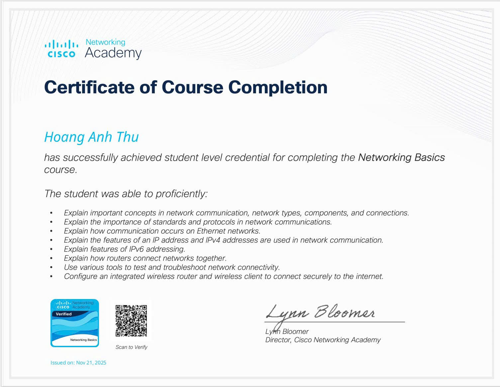
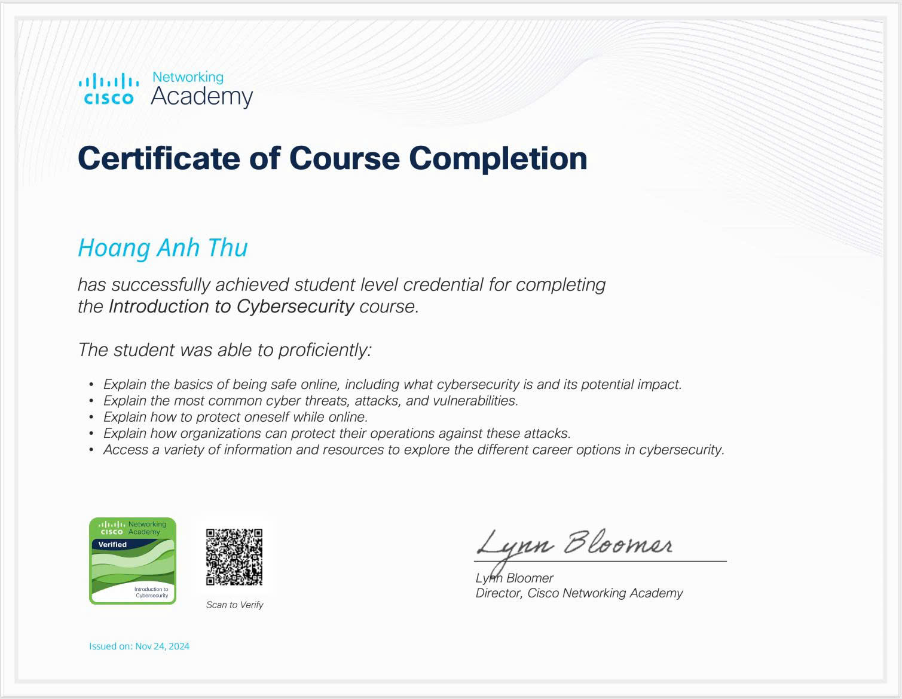
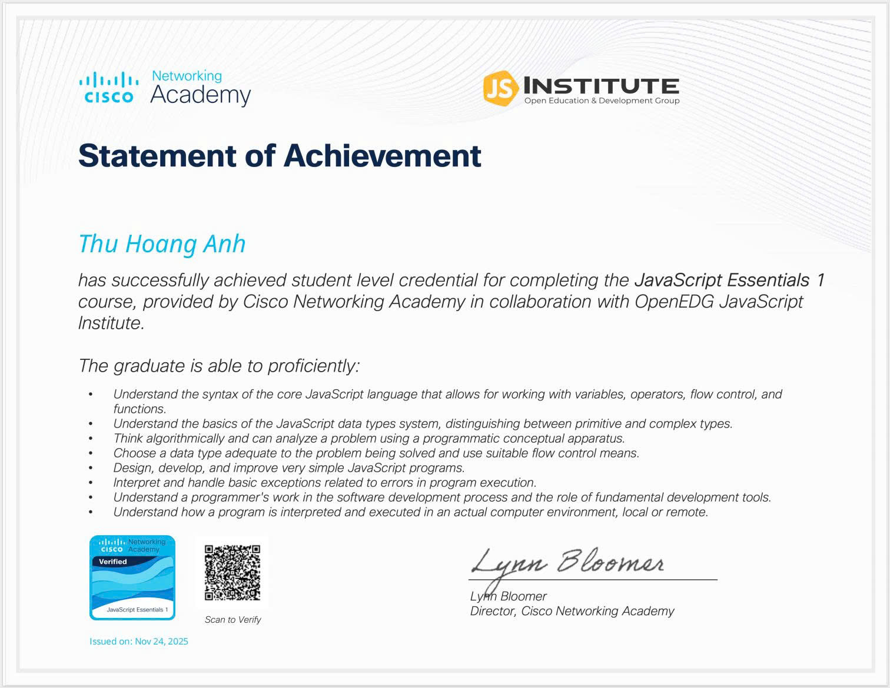
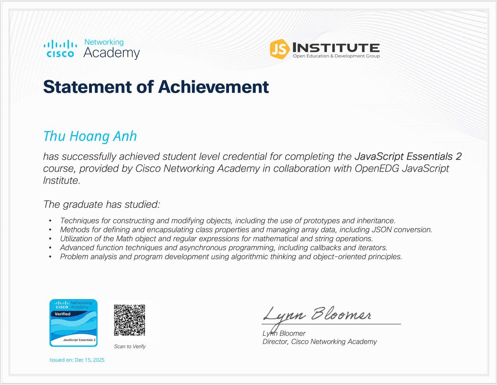

Certificates
Hành trình phát triển và chứng chỉ
Quá trình học tập và phát triển bản thân

Networking Basics
Cisco16/11/2025
Introduction to Cybersecurity
Cisco25/11/2024
JavaScript Essentials 1
Cisco2024
Quá trình học tập và phát triển bản thân